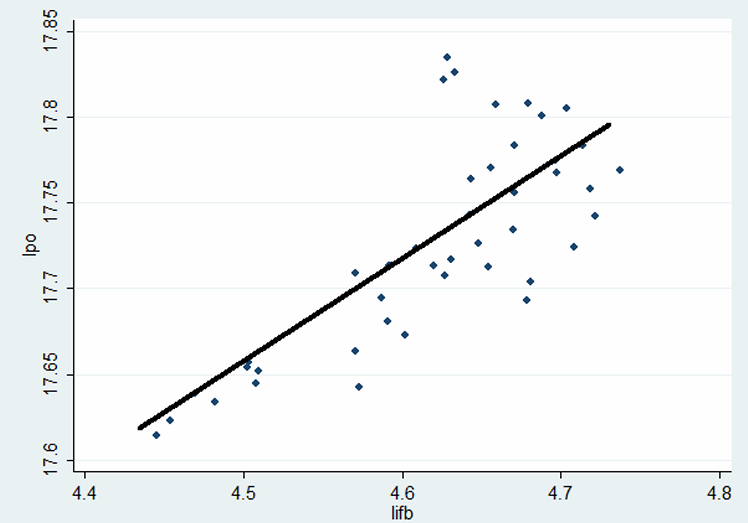
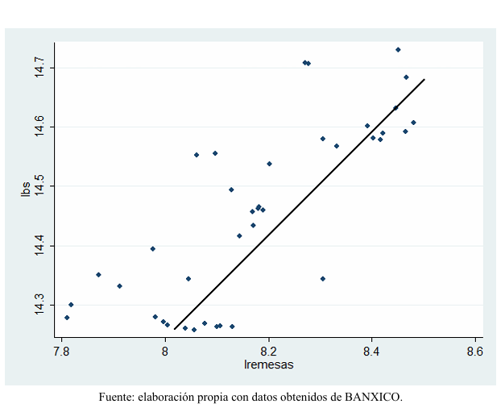

Economics Projects
A selection of research projects and academic work developed throughout my academic training.

Análisis del comportamiento del Empleo, Caso México (2009-2019)
Econometric analysis of the determinants of employment in Mexico from 2009 to 2019, examining the long-run relationships between formal wages, gross fixed investment, and the real exchange rate using Johansen cointegration and unit root tests.
Evaluación del Plan de Desarrollo Económico de Nuevo León en el Periodo 2016-2021
Academic evaluation of Nuevo León’s 2016–2021 State Economic Development Plan, examining its theoretical foundations and alignment with macroeconomic theory and World Economic Forum (WEF) competitiveness frameworks, with a focus on innovation, business sophistication, and long-term economic growth.

Relación entre el incremento de las hacía remesas con el crecimiento de la base monetaria, caso México 2019-2022
Econometric analysis of the relationship between remittances and Mexico’s monetary base from January 2019 to March 2022 during the COVID-19 pandemic, using a log-linear regression model and the monetary approach to the balance of payments to estimate the long-run impact of remittance inflows on domestic liquidity.

Análisis Económico de Nuevo León
Análisis de las principales características económicas y productivas de Nuevo León, considerando indicadores de actividad económica, empleo y competitividad.

Análisis de Competitividad
Investigación sobre los factores relacionados con la competitividad económica y el desempeño de las entidades federativas.

Análisis de Series de Tiempo
Aplicación de herramientas econométricas para el análisis de variables económicas a través del tiempo, incluyendo identificación de tendencias y comportamiento temporal.